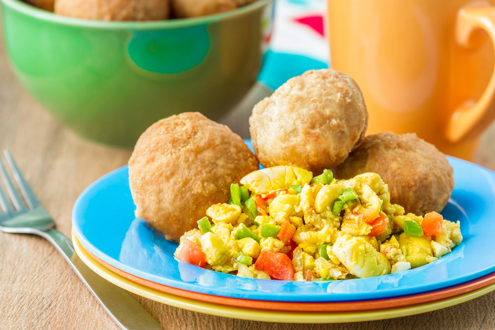

Ackee and Saltfish
Dive into the heart of Jamaican cuisine with Ackee and Saltfish, the national dish that symbolizes the island's rich culture and culinary diversity. This beloved meal pairs the unique, buttery ackee fruit with savory salted cod, creating a harmonious blend of flavors that's both comforting and exotic. Sautéed with onions, scotch bonnet peppers, and tomatoes, it's a vibrant dish that's as colorful as it is delicious.